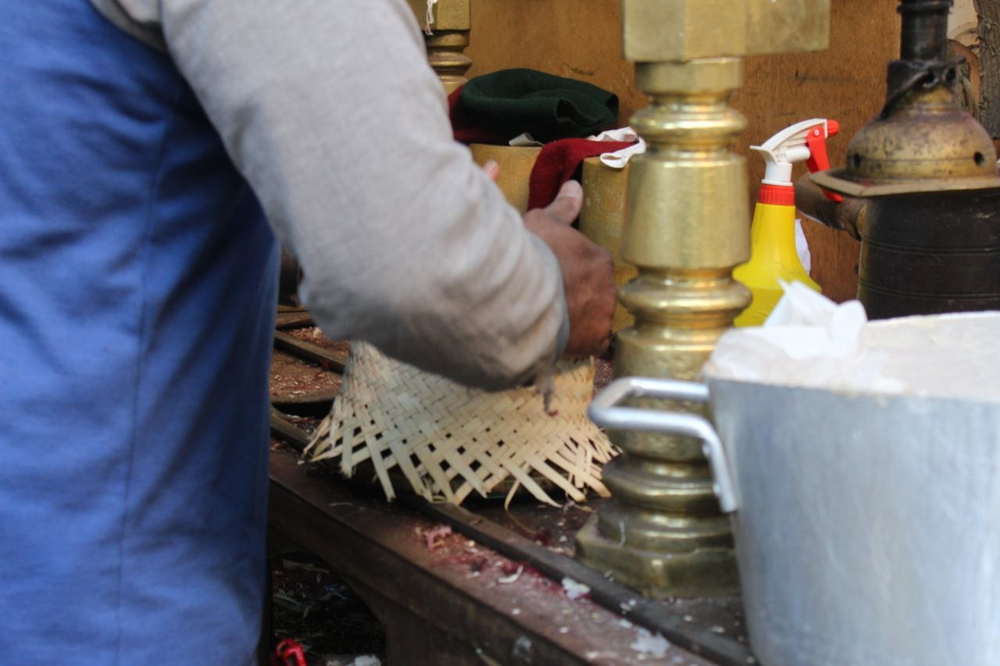
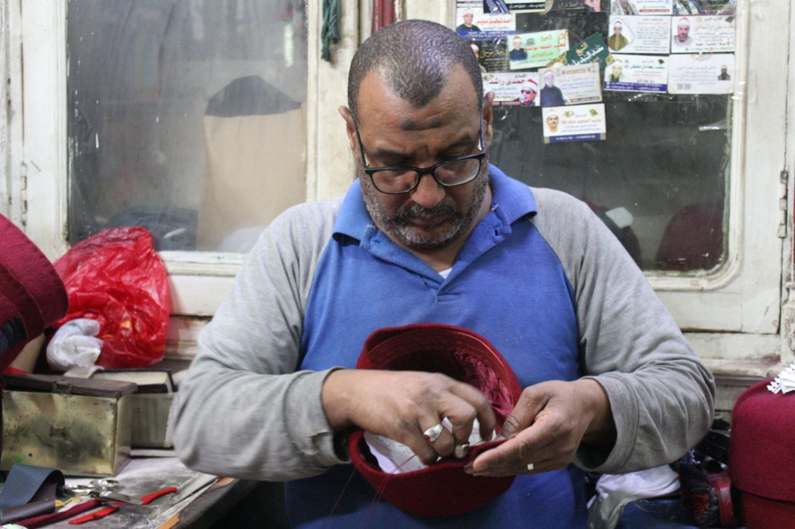
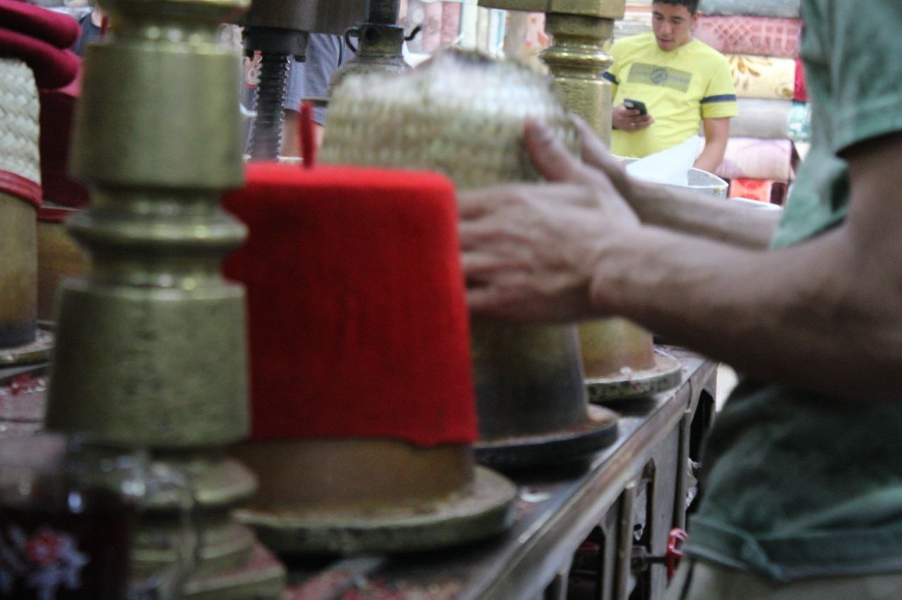

طربوش محمد علي...من الانتشار إلى الاندثار
- الشعب المصري من الشعوب القليلة في العالم التي تتمسك بتراثها وكل ما هو قديم، ودائما يملكه الحنين إلى الماضي، وعندما نعيش زمن الحاضر بتطوره وسرعته ننظر له بطريقة عبثية ونلتفت وننبهر بما خلفه أجدادنا وآباؤنا ونبحث في الماضي عن أصولنا المصرية وطابعنا المتأصل به فننظر إلى المقاهي القديمة وروعة بناء المساجد في العصر الفاطمي وشارع الجمالية والمعز والغورية والطربوش الأحمر يصدر من كل هذه الأشياء رائحة الدفء والطمأنينة.
- ما إن تطأ قدماك منطقتي الحسين والغورية، حتى تشعر أن رائحة الماضي تطاردك، كأنك عدت بالزمن، فتلك الأماكن تقلب بصفحات التاريخ المصري الممتد لمئات السنين، تجمع بين حاضرك الممسك
- بماضيك. فما بين جدران هذه الأماكن التاريخية يوجد أكثر من شاهد على عصور مضت في التاريخ المصري، ومن بينها ورشة صناعة الطربوش والعمامة بالغورية هذا المكان الذي يعود بك مئات السنين إلى الماضي لتشاهد عظمة طربوش الأمراء وعمائم الملوك.
- "إحنا صناع زمن الطربوش الأفندية مصر وعمائم الملوك" هكذا عرفنا عم عماد بنفسه فهو الحفيد التاسع لصاحب أقدم ورشة صناعة الطرابيش والعمامة بمصر، حيث شهدت ورشة أحمد محمد أحمد الطرابيشي أيام حكم محمد علي حتى الوالي سعيد ابنه فكانت هذه الورشة تتعامل معهم بشكل خاص وتصنع طرابيش وعمائم حكام مصر في هذا الوقت.
- عملت الورشة منذ أكثر من 200 سنة في صناعة الطرابيش التي سميت بالطرابيش الملكية في هذا الوقت وصناعة العمائم للأمراء والمشايخ والطلاب، وصنع طربوش الملوك منهم السلطان حسين كامل والملك فؤاد والملك فاروق ولم يكن هذا كل شيء بل كان أبرز نجوم السينما في هذا الوقت يأخذون طرابيشهم من هنا، ومن أشهرهم شر فنطح والريحاني ويوسف بك وهبي وصولا لعمامات رجال الدين من أمثال قراء القرآن الشيخ مصطفى إسماعيل، والشيخ عبد الباسط عبد الصمد وعدد كبير من المقرئين كانوا يحصلون على عمائمهم من المحل.
- وأكد أنه لا يزال الطربوش يحتفظ برونقه القديم حتى يومنا هذا، بنفس تصميمه في سابق عهده، لكن تختلف أسعاره على حسب أصول صناعته.
- يستغرق صناعة الطربوش الواحد من ساعتين لثلاث ساعات، وذلك باختلاف النوع فهناك طربوش الأفندي، وطربوش الريحاني، وطربوش الإمام وطربوش القارئ، ويستخدم في صناعة الطرابيش صوف الكوخ والخوص، وعن مراحل صناعة الطرابيش قال: يتكون الطربوش من زعف النخيل، ويأتي كمرحلة أولى من مدينة رشيد والمرحلة الثانية هي الجوخ وهي مادة من الصوف تستورد من الهند وفرنسا
- والصين، ويتم كي الزعف على قالب الذي يأخذ شكل الطربوش وهو مصنوع من النحاس وبعد ذلك يتم لصق الصوف على زعف النخيل، ثم توضع البطانة من الداخل وتلصق بمادة لاصقة مستخدمة من النشا، ثم يقوم الصنايعي بالخطوة الأخيرة هي الزر الحرير. وتداخل الابن الأكبر للحديث عن الآلة التي يقف أمامها، ويقول: "من حق هذه الآلة أن تدخل موسوعة الأرقام القياسية فقد سجلت رقما قياسيا لأكثر من مئة عام، ومازالت تعمل حتى الآن فهي آلة مصرية النشأة والمولد والموطن يعود أصلها إلى الدولة العثمانية، وانتشرت في عهد محمد علي باشا والي مصر ومازالت تحتفظ بأصالتها، كما لم يحدث أي تغيير في عناصر صناعة الطربوش التي تتكون من خوص وجلد وطاقية من الحرير وزر أيضا من الحرير على أن يكون لونه أزرق أو أسود.
- هناك ثلاثة أنواع من الطرابيش مغربي وشامي ومصري ولكل منها شكل يميزه عن الآخر مثلا المغربي أفندي قصير، أما الشامي فيرتديه صاحبه على عمامة بيضاء طولها خمسة عشر سنتيمترا من الشاش الأبيض أما النوع الثالث المصري فهناك نوعان منه الطربوش الأفندي المصري المتداول في الأذهان الذي يظهر اليوم في الأفلام المصرية القديمة والنوع الثاني منه هو الأزهري الذي يرتديه حاليا دعاة الأزهر وطلابه في المدارس الأزهرية وأئمة المساجد ويسمى حاليا بالعمامة، ولعل الطربوش الأزهري المسمى بالعمامة هو الذي يحرك الآلة الصناعية داخل أول وآخر محل يضيء شمعة المهنة حتى هذا اليوم.
- وعن الألوان المختلفة المستخدمة في صناعة الطرابيش قال إن لها دلالة واختلافا كبيرا حيث إنها تختلف فيما بينها باختلاف الزر فكل زر له دلالة معينة، فعمة المقرئ تكون باللون الأحمر وزر لبني. ويضيف هناك طربوش أحمر بزر أسود يرتديه الواعظ والإمام والداعية والمدرس وشيخ المعهد، ويوجد طربوش خاص بالصوفيين لونه أخضر، بالإضافة إلى طرابيش أخرى بألوان مختلفة للسياح خاصة سياح دول شرق آسيا.
- وفي الوضع الحالي مهنة صناعة الطرابيش في كساد تام وإنها تكاد أن تكون أثار في وقتنا هذا وإن العمل في الورشة حاليا أصبح يقتصر على الأعمال الدرامية، وكذلك العمامة الأزهرية وذلك بعد إلغاء الطرابيش في مصر منذ عشرات السنين. وبين اسف إن هذه أخر ورشة صنع الطرابيش في منطقة الغورية بعد غلق العديد من المحال بجواره بسبب صعوبة العيش وقلة مصادر الرزق.